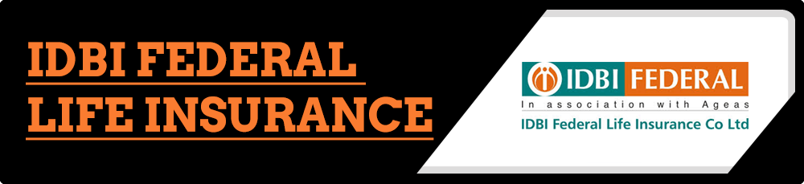

Environment
The Indian insurance skyline has become dotted with a plethora of private companies. International players have become increasingly aggressive in the Indian market. Clients, have become equally demanding and discerning. The internet has armed them with enough tools to make them aware and confident to take advantage of competitive offerings.
On the other hand, corporate India’s growth has been unsteady over the recent years. The controversy over ULIPs with the stock market regulator, SEBI banning 14 insurance companies from issuing fresh ULIPs and IRDA responding to the notice by stating that insurers can continue issuing policies, normally has added to the buzz. This battle for supremacy has created a negative environment and put limitations on new product launches.
Agency Brief
- Differentiate the IDBI- Fortis’ approach
- Win media mind space
- Educate customers and media on ULIPs
- Break clutter and manage top-of-mind awareness
- Communicate brand/service strengths and value proposition
- Good media coverage for all corporate happenings
Strategy
- Launch events and road shows across the country in sync with branch plan roll out
- Ice breaking sessions with key sector and personal finance journos
- Mock sessions and media training to company spokespersons
- Print and electronic media interviews
- Aggressive pitching with media for industry and trend stories
- Position CIO as the markets expert and CEO as the voice of the industry
Result
- Within less than a year, IDBI Fortis grabs the largest share of voice of 73% with contribution in Industry stories
- Independent analysis by monitoring agencies like Cirrus & Eikona show IDBI Federal scoring very high on image
- Figures among top ten private insurers in India, despite being the late entrant and ranking much low in performance terms
- Ranked 5 in September ‘10 with aggressive stance on ULIP issue
- Demonstrates wide media acceptance, on radar of financial media
- Quality of Exposure second best amongst the peer group i.e. 195 compared to average 170
- Coverage in top as well as regional publications
- No negative coverage
- No major announcement by IDBI Fortis - yet exposures in industry stories jumps
- Coverage of broad spectrum - HR, Product Launch, Market Share, Corporate Repute, Profiling etc.
Media Values
Cirrus:
- In Q3 IDBI Fortis is ranked at No. 6 among the top insurance players and 5th among the Private insurance players.
- Out of the total coverage IDBI Fortis has received 6% of the total coverage which is at par with Bajaj Allianz and Met Life and more than 7 other insurance players.
- The coverage distribution was the highest for the National Daily, 61% followed by the Business Daily, 22% and Regional daily, 17%.
- The top reporting genres for IDBI Fortis was Product Service which got an exposure of 38% followed by Product Launch 28%. The Product launch got a QE of 200%
Eikona:
According to Eikona, IDBI Fortis topped the private insurance players league, this difference in the ranking was because Cirrus missed some clippings.
Client Testimonials
I have had experience with Concept PR over nearly 5 years - during my days at IDBI Bank (where I was Head – Marketing) and at IDBI Fortis.
They are a hard-working bunch who genuinely live by their credo of PR 24x7. I have always found them to be available for any PR activity or emergency.
Most importantly, they have fantastic journalist relationships across the country. Practically all the press conferences they have organized for us have been well attended and the coverage has always been exceptional.
We have derived strong value in terms of cost of media coverage from them and that is why they have been a PR agency that has worked with us for so long.
- Amish Tripathi, (then) National Head – Marketing & Product Management